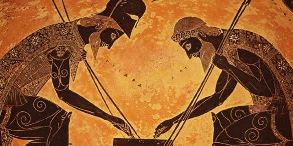
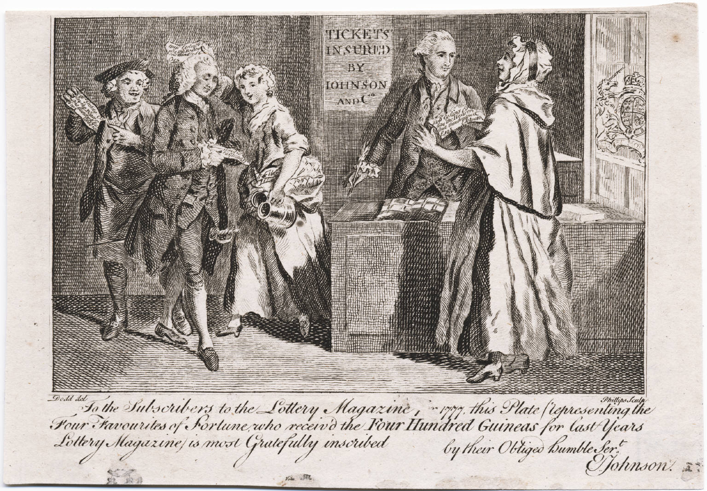

GAMBLING TIMELINE
Prehistoric Period
Evidence suggests that gambling activities, such as casting lots or drawing straws, were practiced among ancient civilizations.
Earliest Form of Gambling
The earliest six-sided dice are believed to have been used in Mesopotamia (modern-day Iraq).
Earliest Casinos
The first recorded official gambling houses, or "casinos," were established in ancient Rome.
Middle Ages Gambling
Gambling becomes widespread across Europe, with games like dice, cards, and betting on animal fights gaining popularity.
Establishment of Lotteries
Lotteries are widely used by governments to raise revenue for public projects, including the financing of colonies in America.
Establishment of the Gambling Industry
The emergence of gambling establishments such as casinos and racetracks becomes prominent in Europe and the United States. Gambling grows rapidly in America, with the expansion of saloons offering card games and betting on horse races.
Founding of Las Vegas
Legalization of gambling in Nevada, leading to the development of Las Vegas as a gambling destination.

U.S. State Lotteries
The introduction of state lotteries in the United States becomes a significant source of revenue for many states.
The Digital Revolution
The rise of internet technology leads to the development of online gambling platforms, revolutionizing the industry.
Asian Gambling Market
Macau becomes known as the "Gambling Capital of the World" with the rapid expansion of its casino industry, surpassing Las Vegas in gambling revenue.

The Future of Gambling
Gambling regulations and attitudes toward gambling continue to evolve globally, with a focus on responsible gambling practices and the legalization of online gambling in many jurisdictions.